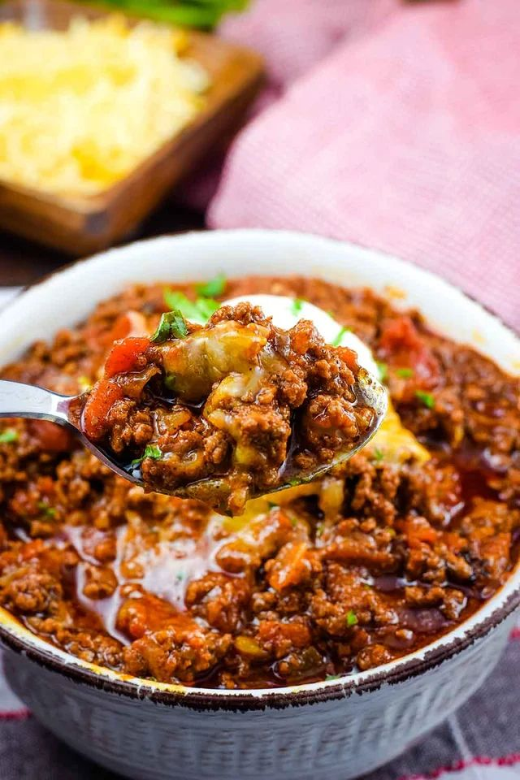

Joaquim's Chilli

Around 17 years old I started working as a groundsman for an arborist company and developed a fierce appetite. One of my favourite foods to satisfy my need for big calories was a chilli con carne (best served on chips, in my opinion). This recipe was given to me by my mother when I moved out of home and since then it has been my number 1 go to dish.
I've attemped to refine the recipe over the years, some good tweaks, a lot of bad. Here is my latest iteration.
Ingredients
- 1tbsp Olive Oil
- 1 Brown Onion
- 3 Cloves Garlic
- 1 Large Red Bell Pepper
- 500g Lean Beef Mince
- 1 Packet Chilli Con Carne Seasoning
- 1tbsp Tomato Paste
- 1 Can Chopped Tomatoes
- 1 Cube Beef Stock
- 1 Can Red Kidney Beans
- 1 Can Black Beans
- 1 Square Dark Chocolate
- 2 Cups Grated Cheddar
- 1/2 Cup Sour Cream
Method
- Dice the brown onion and capsicum, chop the garlic and add both to a large frying pan with the olive oil on medium heat.
- Once the onion is translucent (~5 minutes) add the mince and fry until fully browned.
- Add the chilli seasoning to the pan with salt and pepper to taste. Mix through.
- Add the chopped tomatoes, tomato paste, and beef stock cube.
- Drain and add the kindey beans and black beans.
- Add the dark chocolate and stir through until melted.
- Simmer until slightly thickened.
- Serve over chips or rice, top with sour cream and cheese.